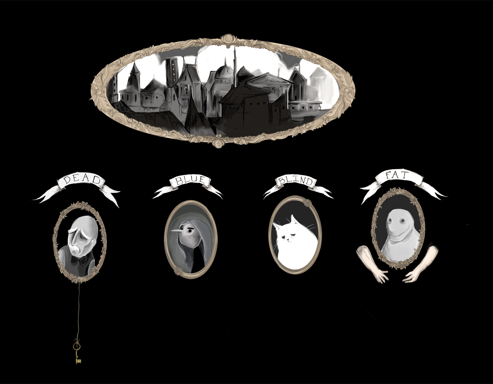
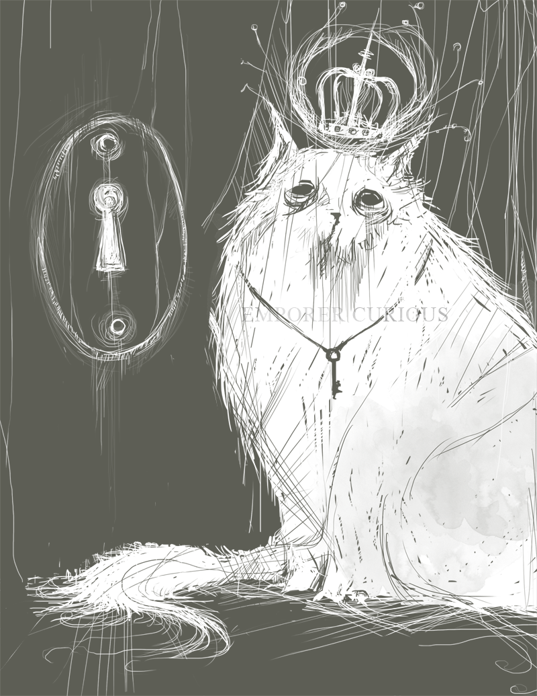
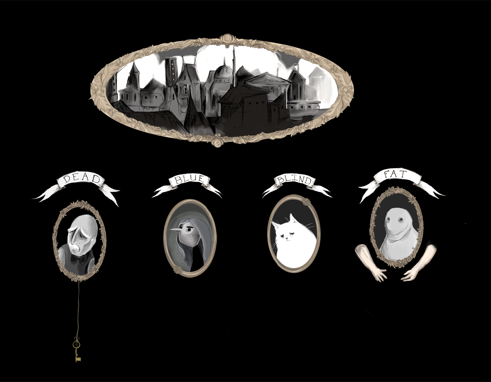
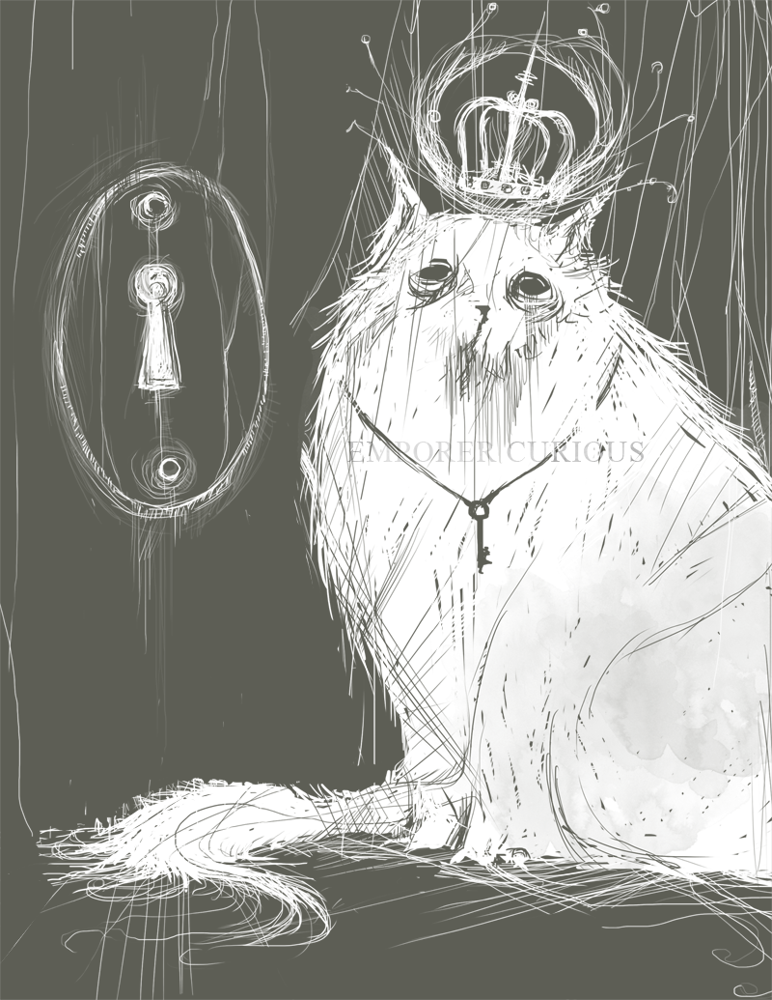

Hey hey, I'm Alice. I make 2D and 3D visuals to look at and play with. I got my MFA in Animation and interactive media from OSU, and now I work as a Data Viz Specialist for CCNR at Northeastern University. My most recent work is mostly web content reated using D3 and three.js. I've also worked with Unity3D, Maya, Processing & AfterEffects and am interested in many many other art & design tools! If you want to make things or talk about making things, you can reach me @ alice@alicenko.com
Exhibitions, Screenings & Publications
Nature 150 Anniversary Cover, Nov 2019
Globart Academy, Oct 2019
JMIR Serious Games, Nov 2019
VISAPP, October 2018
Art of Networks at CompleNet, March 2018
Hacking Arts @ MIT Media Lab, November 2017
OSU Spring Design Exhibition, March 2017
Unity3D Workshop @ Ohio Celebration of Women in Computing, February 2017
G'DEX Game Expo, October 2016
Chillenium Game Jam, Texas A&M University, September 2016
SIGGRAPH 2016, Voxel Bay: VR for Pediatric Pain Management Talk, July 2016
Ohio Game Developer Expo, Game Demo, November 2015
Digi-Eye Student Film/Video Showcase, May 2015
Drums Downtown XI, Real-time Animation Performance April 2015
Ohio Game Developer Expo, November 2014
Journal of Molecular Biology Volume 426 Issue 22 cover art, November 2014
DAIM Recall Animation Screening, August 2014
FSU Undergraduate Research Symposium October 2013
Awards & Honors
Information is Beautiful Awards shortlist, October 2018
People's Choice Award, Adobe Creative Jam OSU, April 2017
What's Good Awards 2017 Honoree (Voxel Bay), March 2017
SXSW Interactive Innovation Awards Finalist (Voxel Bay), March 2017
Design Department Travel Funding Awarded, March 2017
Arts and Humanities Graduate Research Small Grant, July 2016
Design Department Travel Funding Awarded, July 2016
Animation Faculty Search Committee, Spring 2016
President of Animation Club at OSU, August 2015 - May 2017
Honors Thesis Award Spring 2013
Ann Kirn Award Spring 2013
Anne Kirn Award Spring 2012
Congressional Arts Competition Juror's Choice Award 2008
Congressional Arts Competition Administrative Award 2008


 


